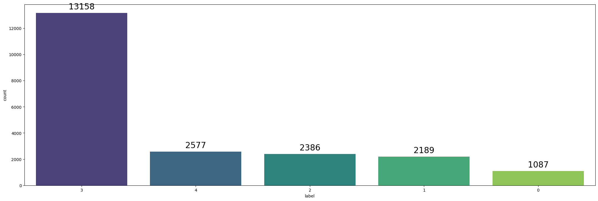
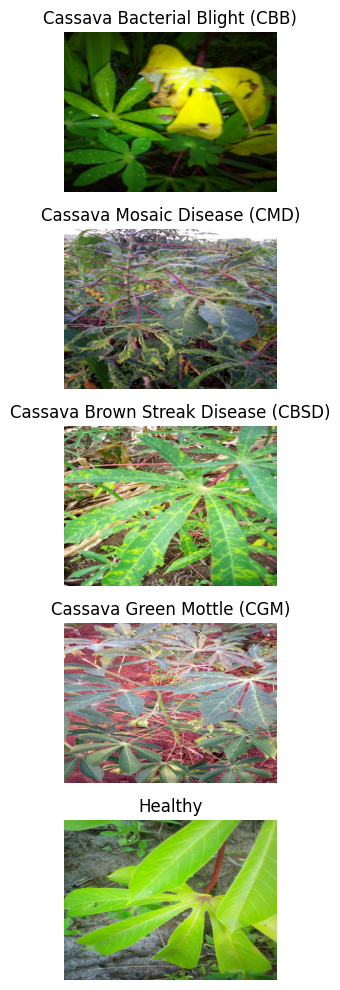
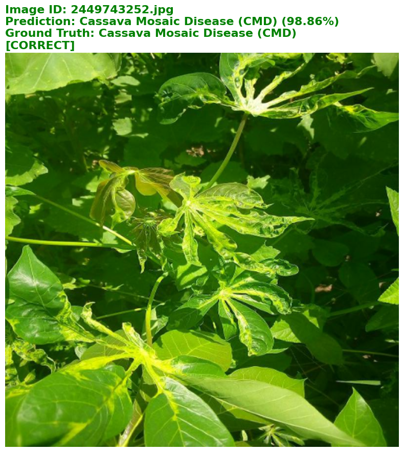
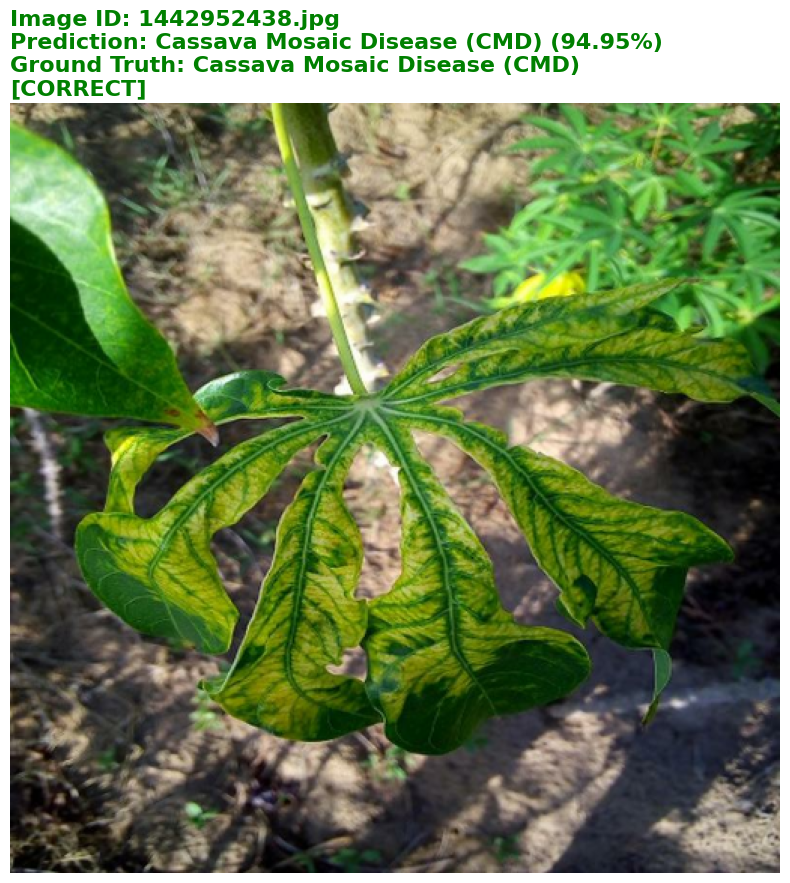
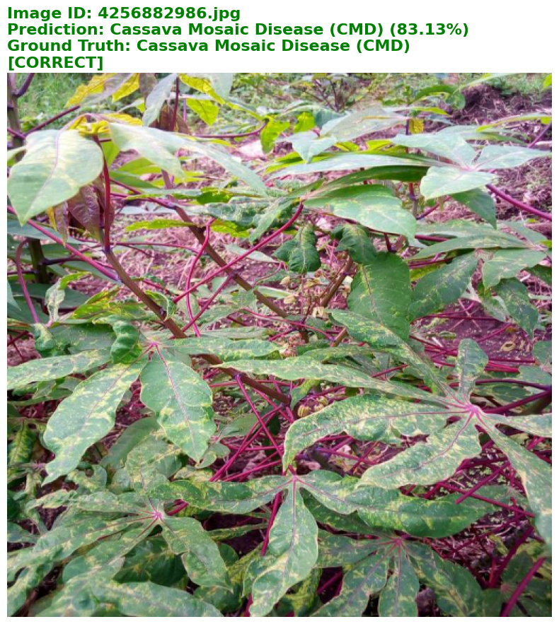
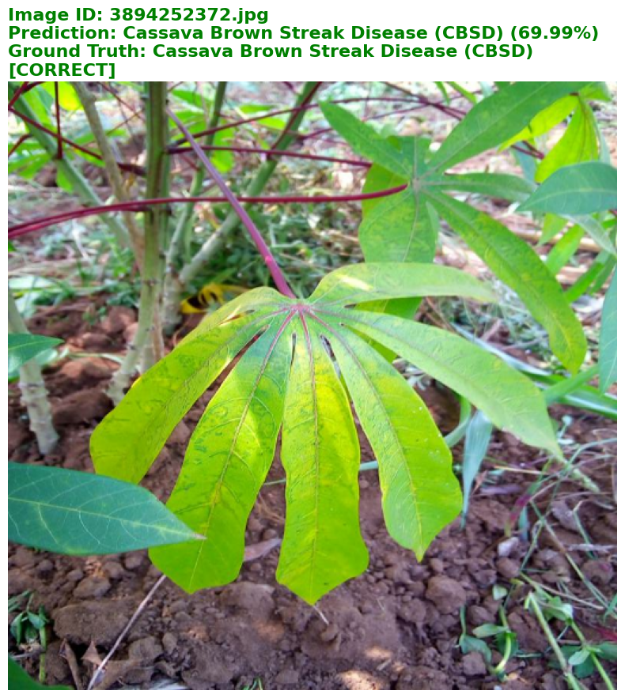
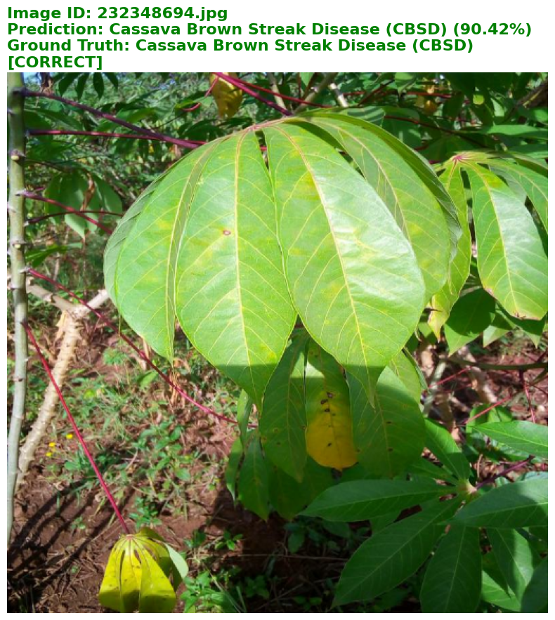

Training Environment & Dependencies
Main libraries, accelerator setup, and reproducibility controls.
Dataset & Label Space
The notebook reads the official Kaggle Cassava Leaf Disease Classification dataset and maps 5 numeric labels to disease names.
| Label | Class Name | Image Count | Role |
|---|---|---|---|
0 | Cassava Bacterial Blight (CBB) | 1,087 | Disease |
1 | Cassava Brown Streak Disease (CBSD) | 2,189 | Disease |
2 | Cassava Green Mottle (CGM) | 2,386 | Disease |
3 | Cassava Mosaic Disease (CMD) | 13,158 | Majority Class |
4 | Healthy | 2,577 | Healthy Control |
Dataset note: The label distribution is highly imbalanced, with CMD dominating the training set. This makes validation tracking, augmentation, and careful fine-tuning especially important.
Training System Architecture
From Kaggle TFRecords to a saved EfficientNetB3 model artifact.
train.csv, inspect image dimensions, read the label mapping JSON, and visualize class distribution and one image per class.EfficientNetB3 Transfer-Learning Stack
A frozen ImageNet backbone first, then full-model fine-tuning.
d = α^φ, w = β^φ, r = γ^φEfficientNet scales depth, width, and input resolution together instead of making only one dimension larger. This gives EfficientNetB3 a strong accuracy-to-compute balance for high-resolution plant disease images.
EfficientNetB3(include_top=False, input_shape=(512,512,3))The base model outputs a 16×16×1536 representation, reusing ImageNet visual features such as edges, textures, veins, lesions, and high-level leaf shapes.
The ImageNet backbone is frozen first, so only the custom classifier head learns. This protects the pretrained visual features while the new 5-class cassava head stabilizes.
After the head learns the task, the backbone is unfrozen and trained with a much smaller learning rate. This gently adapts general ImageNet features to cassava-specific disease textures.
GAP → Dense(256, ReLU, L2) → Dropout(0.3) → Dense(5, Softmax)The custom head converts EfficientNet feature maps into disease probabilities and uses dropout plus L2 regularization to reduce overfitting.
| Component | Output Shape | Parameters |
|---|---|---|
InputLayer | (None, 512, 512, 3) | 0 |
EfficientNetB3 | (None, 16, 16, 1536) | 10,783,535 |
GlobalAveragePooling2D | (None, 1536) | 0 |
Dense + Dropout | (None, 256) | 393,472 |
Dense Softmax | (None, 5) | 1,285 |
Core Training Code
Condensed version of the model-building and training logic from the notebook.
# Build a transfer-learning model: EfficientNetB3 backbone + custom cassava head def cassava_model(IMAGE_SIZE): base_model = tf.keras.applications.EfficientNetB3( weights='imagenet', include_top=False, input_shape=IMAGE_SIZE + (3,) ) # Stage 1: freeze pretrained filters and train only the new classifier head base_model.trainable = False inputs = tf.keras.layers.Input(shape=IMAGE_SIZE + (3,)) x = base_model(inputs, training=False) x = tf.keras.layers.GlobalAveragePooling2D()(x) x = tf.keras.layers.Dense(256, activation='relu', kernel_regularizer=l2(0.001))(x) x = tf.keras.layers.Dropout(0.3)(x) outputs = tf.keras.layers.Dense(5, activation='softmax')(x) return tf.keras.Model(inputs, outputs) with strategy.scope(): model = cassava_model((512, 512)) model.compile( optimizer=tf.keras.optimizers.Adam(3e-4), loss=tf.keras.losses.CategoricalCrossentropy(label_smoothing=0.01), metrics=['accuracy'], steps_per_execution=32 ) # Train the head with callbacks: checkpoint, early stopping, and LR reduction history_head = model.fit( train_dataset.repeat(), validation_data=val_dataset.repeat(), epochs=15, steps_per_epoch=271, validation_steps=62, callbacks=callbacks ) # Stage 2: unfreeze EfficientNetB3 and fine-tune with a safer low learning rate model.get_layer('efficientnetb3').trainable = True model.compile( optimizer=tf.keras.optimizers.Adam(3e-5), loss=tf.keras.losses.CategoricalCrossentropy(label_smoothing=0.01), metrics=['accuracy'] ) history_finetune = model.fit( train_dataset.repeat(), validation_data=val_dataset.repeat(), epochs=10, steps_per_epoch=271, validation_steps=62, callbacks=callbacks )
Training Visual Diagnostics
Class imbalance and visual examples from the five cassava categories. Click any image to enlarge.


Training Performance Diagnostics
Summary of the two-stage training trajectory.
Diagnostic Breakdown: Head training stabilized the custom classification layer, while fine-tuning substantially improved validation loss from 0.6660 to 0.4703 and lifted validation accuracy to 87.18%. On Kaggle, the final workflow reached an 89% public score, close to the 90% accuracy reference from the Google team model.
Saved Model Loading Strategy
The trained model is treated as a reusable Kaggle asset.
DATA_DIR = '/kaggle/input/cassava-leaf-disease-classification' MODEL_DIR = '/kaggle/input/cassava-leaf-model/tensorflow2/default/1/final_model_cassava.keras' model = load_model(MODEL_DIR) AUTO = tf.data.AUTOTUNE IMAGE_SIZE = (512, 512) BATCH_SIZE = 8 NUM_CLASSES = 5
Reasoning: Separating training and inference avoids expensive retraining during submission runs and allows the model artifact to be reused cleanly across notebooks.
Inference & Submission Architecture
From saved model to final Kaggle submission file.
final_model_cassava.keras from the Kaggle model input path.argmax over averaged probabilities and save image_id,label rows to submission.csv.Test-Time Augmentation Strategy
Inference uses multiple augmented views to reduce sensitivity to image position, scale, and orientation.
The inference pipeline reuses random rotation, translation, zoom, horizontal flip, and vertical flip to generate alternate views of the same image. This is especially useful for field photos where leaf orientation, camera distance, shadows, and crop position vary strongly.
mean_preds = np.mean(all_preds, axis=0)The final prediction is the average probability vector across TTA rounds. This works like soft-voting: confident and consistent classes remain strong, while unstable predictions are smoothed before taking the final argmax label.
TTA intuition: one image is passed through the model several times after small realistic transformations. The model then averages the class probabilities, which reduces the chance that one unlucky crop, rotation, or zoom controls the final submission label.
def tta_predict_batch(model, images, ids, num_tta): all_preds = [] for _ in range(num_tta): augmented = data_augmentation(images, training=True) preprocessed = preprocess_input(augmented) preds = model.predict(preprocessed, verbose=1) all_preds.append(preds) mean_preds = np.mean(all_preds, axis=0) names = [img_id.numpy().decode('utf-8') for img_id in ids] return mean_preds, names
Inference Visual Checks
Five uploaded verification images from the inference notebook. First row has 3 cards; second row has 2 centered cards.





Submission File Generation
The inference notebook formats averaged TTA predictions into Kaggle’s required CSV schema.
| Column | Source | Description |
|---|---|---|
image_id | Decoded test file path | Filename for each competition test image. |
label | argmax(mean TTA predictions) | Final predicted class ID from 0 to 4. |
submission_df = pd.DataFrame({
'image_id': tta_image_names,
'label': pred_labels
})
submission_df.to_csv('submission.csv', index=False)
print('Submission file created successfully!')Project Synthesis & Roadmap
Key takeaways from the full training-to-inference pipeline.
Empirical Breakdown: The project uses an efficient separation of concerns: TPU training for the expensive model-building phase and GPU inference for fast, repeatable submission generation. Fine-tuning improved the model to a best validation accuracy of 87.18%, best validation loss of 0.4703, and an 89% Kaggle public score, close to the 90% Google team model reference.
Engineering Value: Saving the trained model as a Kaggle model artifact makes the workflow more production-like because inference can load a frozen artifact instead of depending on a long training run.
Future Directions: Add class-weighting or balanced sampling for the CMD-heavy label distribution, compare EfficientNetB4/B5 or ConvNeXt backbones, ensemble multiple folds, and add Grad-CAM explanations for disease-region interpretability.